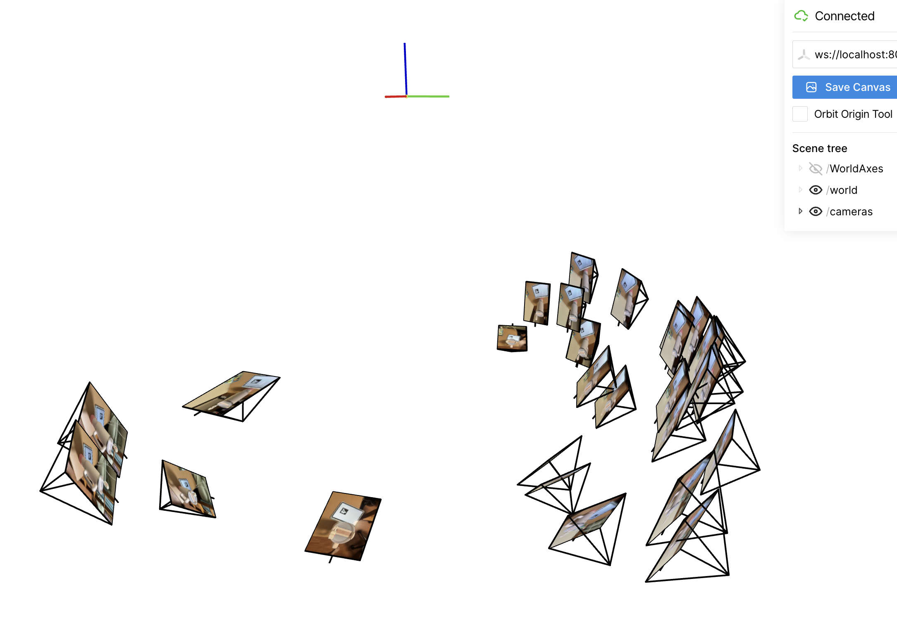
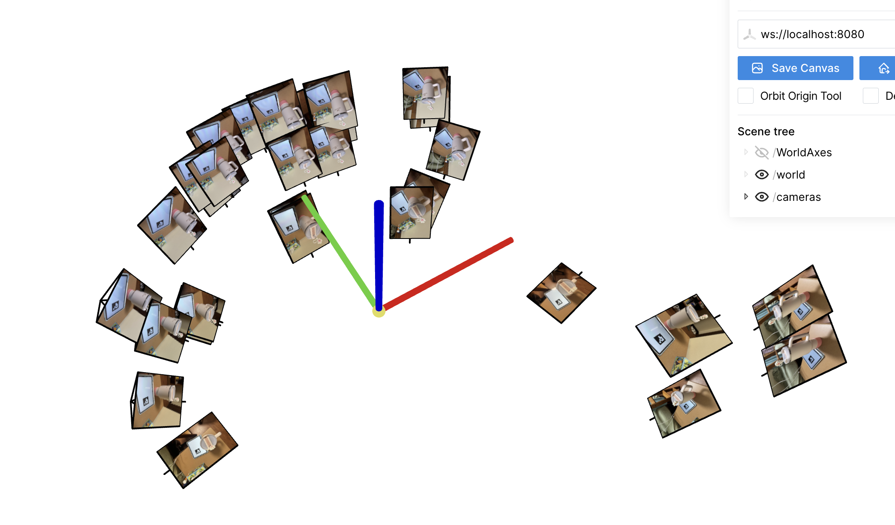
2 screenshots of cloud of cameras in Viser showing the camera frustums' poses and images. The aruco tag in some images did not get detected, but I still managed to have >30 valid images.
Since the resolution fo the image was too high, I used a dataloader to reduce training time.
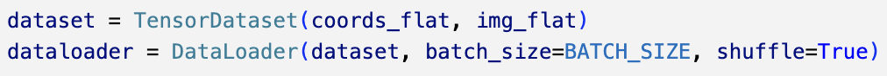
Initially, without positional encoding, the image appears to retain mainly the low frequencies, leaving out the high frequency details.
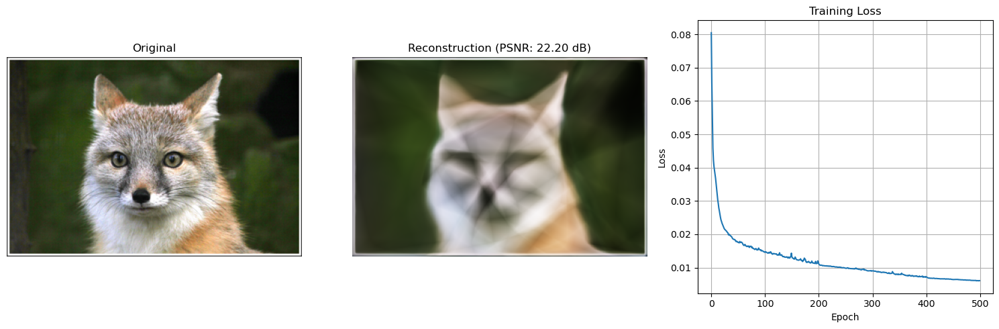
After positional encoding, the results are evidently better, with the high frequencies being retained. The plot of training loss over iterations also shows loss being reduced at a faster rate, though the reduction stagnates after few iterations. This aligns with what was taught in lecture. A higher PSNR value is also observed, indicating a higher quality of reconstruction when PSNSR is used.
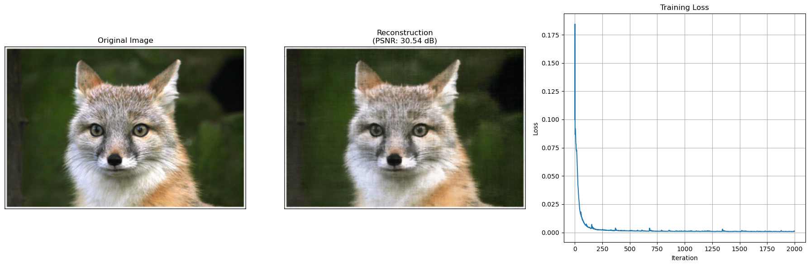
Model Architecture: 4 layers, 256-wide positional-encoding MLP using Adam with a learning rate of 1e-3.The training progression is shown below:
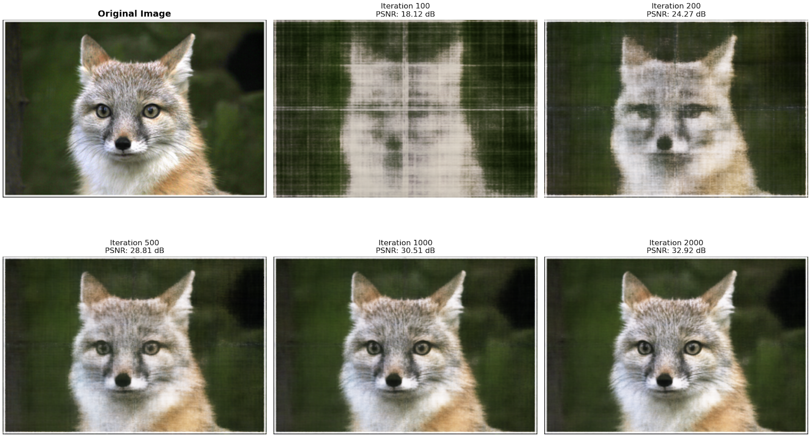
After tuning the hyperparameters and testing with smaller samples, the 2 choices of maximum positional encoding frequency and width are as shown.
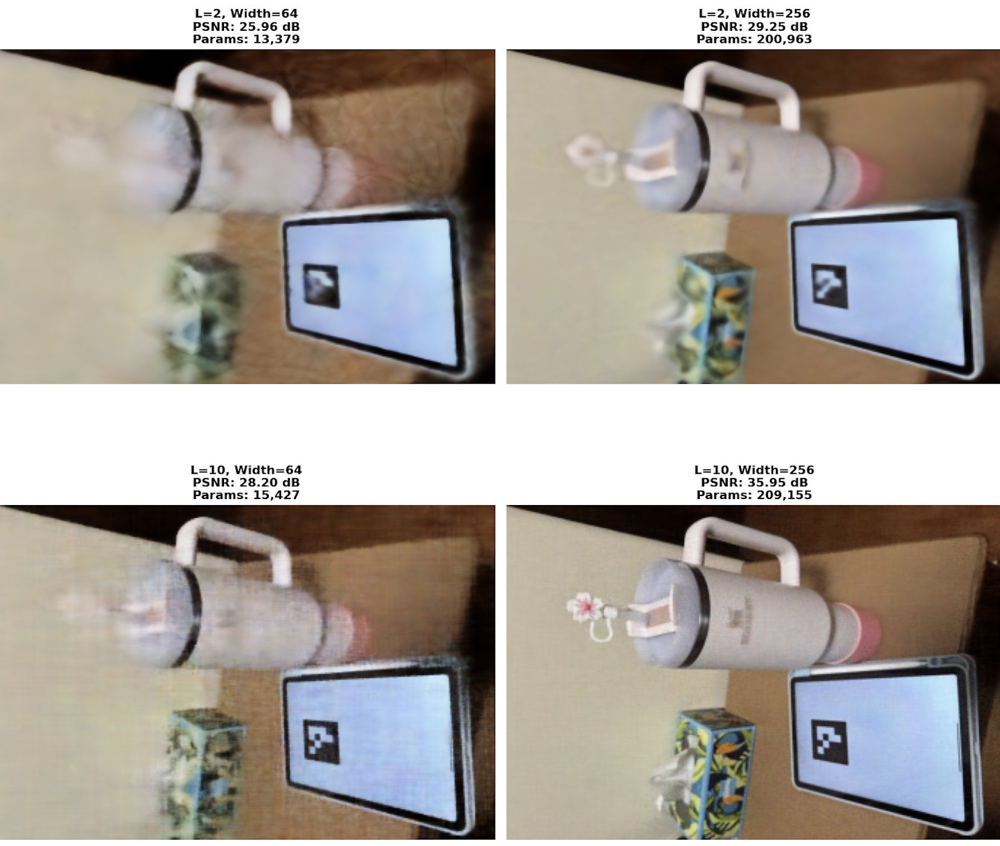
It is observed that the best result is when frequency and width are highest, though all iterations have a decent PSNR. A high width but low frequency also produced a reasonably clear image.
The PSNR curve (and loss curve) for training my own image is observed as such:
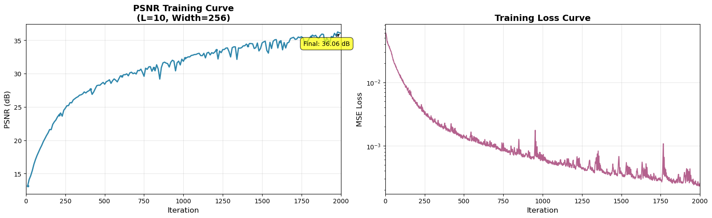
At various iteration checkpoints, the PSNR graph improvement is visualised below. This shows us that improvement in PSNR value is quickest at the beginning.
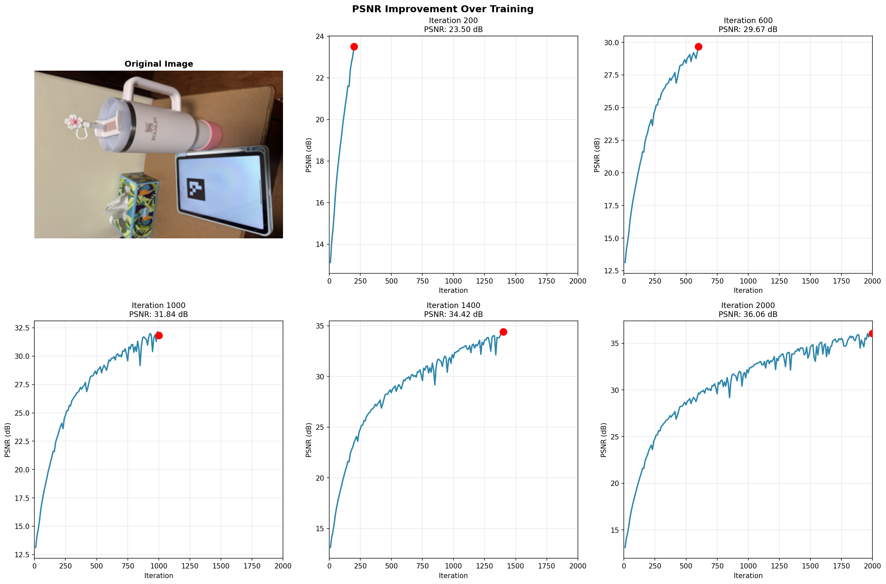
To use a neural radiant field to represent a 3D space, a few functions need to be defined first. To ensure training time is not too unreasonable, all images from this part will be downsized (e.g. the 200x200 lego sample and eventually my own 200x150 sample.
Part 2.1: Transform a point from camera to world space. This was done with a 4x4 camera-to-world transformation matrix. The top-left 3x3 part encodes the rotation from camera to world, while the last column encodes the translation of the camera poistion in world coordinates. The 3D points in camera space are measured relative to camera origin. Then, each 3D point is augmented to (x,y,z,1) so that both rotation and translation can be applied in a single matrix multiplication.
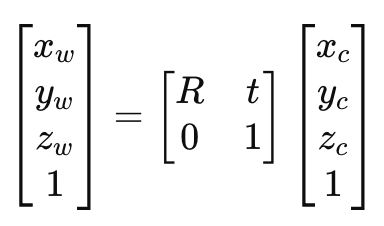
To invert the previous process and transform a point from pixel coordinate system back to camera coordinate system, the inverse of the camera-to-world matrix is applied.
To convert a pixel coordinate to a ray with origin and normalised direction, the ray origin from the camera's position is first extracted using the translation portion of the camera-to-world matrix. Each pixel is then unprojected into camera coordinates at unit depth using the intrinsic matrix (K), revealing its direction in the camera frame. Thereafter, this directino is transformed into world coordinates using the camera-to-world transformation, and the ray direction is obtained by subtracting the origin and normalising.
Part 2.2: A batch of ray origins (rays_o) and directions (rays_d) are taken. The function sample_along_rays discretises each ray into multiple 3D sample points between the near and far depth range. It first defines evenly spaced depth values(t_vals) between near and far. In training, stratified sampling is performed, preventing model overfitting, and improving overall coverage along the ray. During validation, fixed midpoints are used instead. Last, the 3D positions of the samples are computed using the equation:
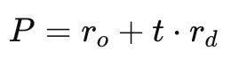
Converting the pixel coordinates into rays in the dataloader, and return ray origin, ray direction and pixel colours from the dataloader. Below are the visualisations for 100 camera rays
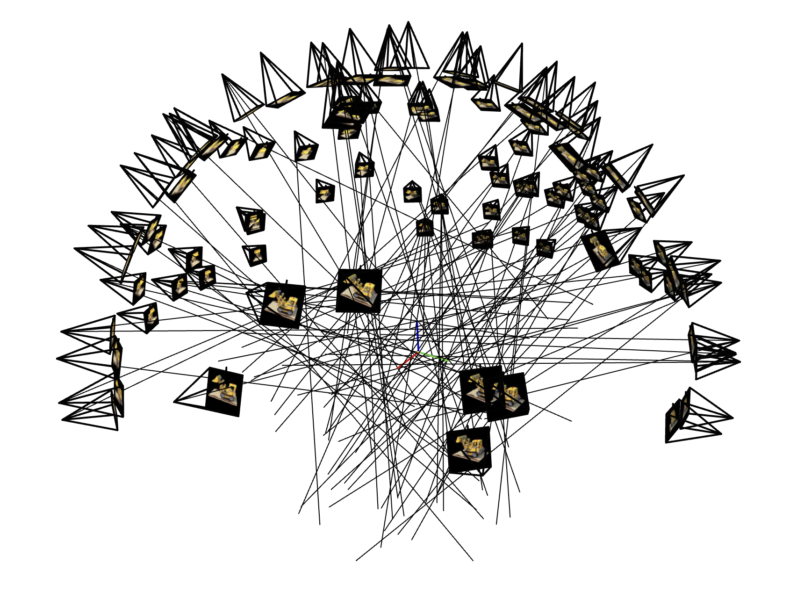
and rays from just one camera.
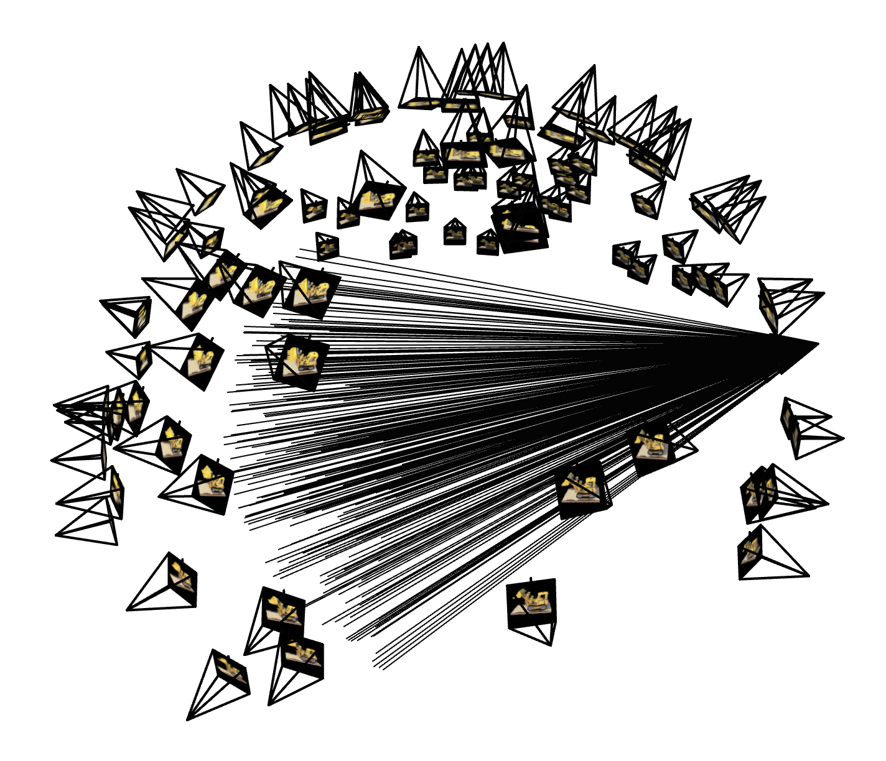
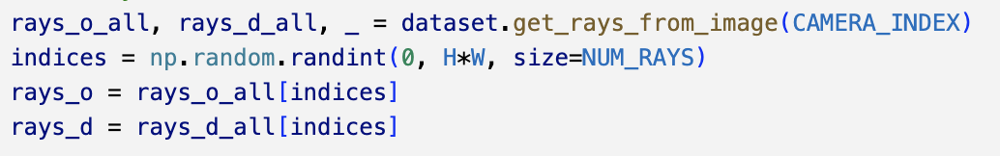
The goal for this part is for the network to accept 3D world coordinates and ray direction as inputs to predict the colour and density for 3D samples. I implemented the train_nerf_fast function, which uses a Multi-Layer Perceptron (MLP) with an architecture which takes both the 3D coordinates and the view direction as inputs, and are explicitly passed into the network. The function also includes code to save snippets of training at certain iteration intervals.
I decided to visualise the training progression at iterations 200,500,1000,1500 and 2000. Due to computational capability constraints, 2000 total iterations were taken, with batch size 4096 per gradent step, 48 samples per ray, and learning rate of 5e-4.
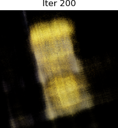
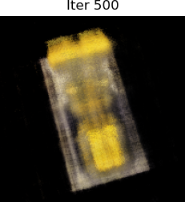
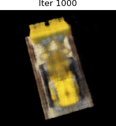
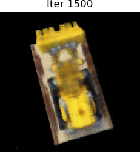
The PSNR Curve on the validation set is as follows. A final PSNR of 23.35dB was achieved:
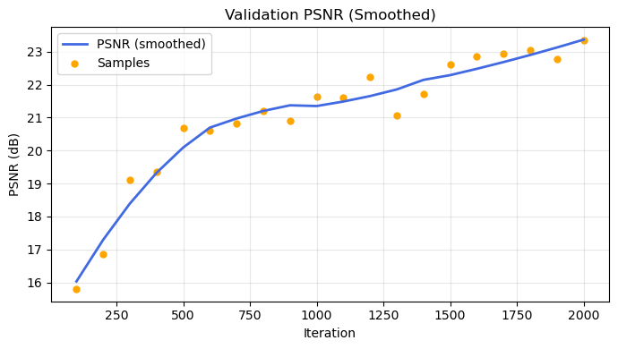
Obtaining 60 spherical rotation frames from the trained model, the following gif was created:
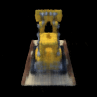
I first resized my images in the training dataset to 200x150, or training would take too long. Applying the same train_nerf_fast to my own images taken from part 0, the results were not as expected. Even after 1500 iterations, my object was not distinguishable from the background. This was trained with 1500 iterations, 64 samples per ray, batch size 4096, learning rate 5e-4 and near=2, far=6.
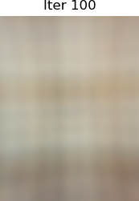
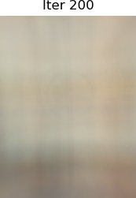
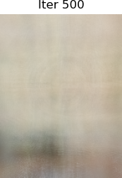
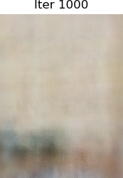
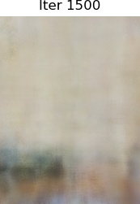
The PSNR and Loss curve for the above training is as shown:
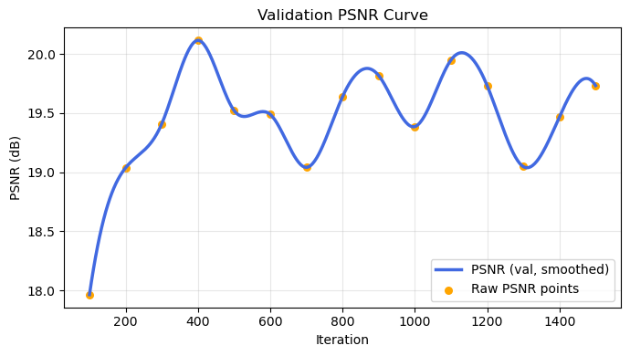
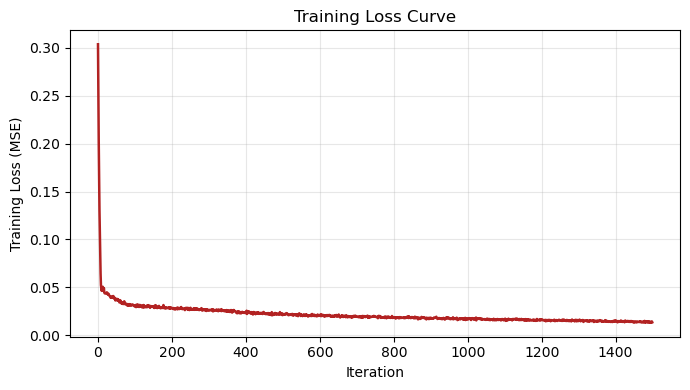
This was confusing because the loss appears to reduce as expected, PSNR is about 20dB, yet my results appear poorly trained.
I was also unable to render any frame my own image's training, so I was unable to create a gif for it :(